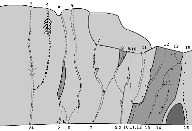

Årjängsberget
Lat: 59.350083336664305
Long: 12.14813232421875
Kategori:Mix
Kategori:Trad
Kategori:Sport
Kategori:vertikalt
Kategori:överhäng
Allmänt
Kanske Värmlands finaste klippa med utsökta spricklinjer, mixad väggklättring och lite sport.
Beskrivning
Årjängsberget, även känt som Järnberget, ligger föga överraskande utanför Årjäng i Värmland. Lederna är mellan 15 till 25 meter långa och ligger i gradintervallen 3 till 9-/9. Klippan består av vattenslipad bohusgranit och bjuder på ihållande sprickor i de lägre graderna, väggklättring i mellanregistet och några hårda sportturer. Trots att klippan är förhållandevis liten (endast ett 40-tal leder) finns överraskande många leder av mycket hög kvalitet. Stockholmsklättrare på väg mot södra Norge passerar praktiskt taget klippan och ett stopp är definitivt att rekommendera.
Utskriftsvänlig variant i A4:
Media:arjangsforaren_A4_20060903.pdf
Utskriftsvänlig och behändig variant i A5:
Media:arjangsforaren_A5_20060903.pdf
(Skriv ut första två sidorna, vänd pappren och skriv ut resterande 2 på baksidorna)
OBSERVERA
att de utskriftsvänliga pdf-filerna ovan
INTE
innehåller samtliga leder som finns nedtecknade längre ner på denna sida. De skiljer sig också i beskrivningar och övrig uppdaterad information.
När denna text tas bort är pdf-filerna ovan uppdaterade med samtliga leder.
Pågående graddiskussion
Flera leder har graderats upp och ner åtskilliga gånger sen de gjordes. Speciellt graderna för de hårdare ledera i föraren är baserade på ett fåtal klättrares uppfattning, varför all feedback är välkommen.
anses av många hålla 7+/8-, itsället för 8- som angivet i föraren
anges ofta som 7 istället för 7+
Flera av lederna i femmaregistret på Stora väggen kan vara föremål för uppgradering
var tidigare 6-, inte 6
anges i flera förare som 7- vilket är väl barskt. 7 föreslås här.
kan göras på olika sätt, att traversera vänster påverkar graden åt det enklare hållet
Vänsterpartiet
Vattenslipat parti längst till vänster på klippan. Börjar i ett lite skuggigt skogsparti till vänster. Längre till höger mer exponerad klättring och mer och mer vattenslipad granit. Finare leder, men också högre svårighetsgrad.
Under uppstigningen till vänster skymtar en svaklippa med en framträdande spricka. Detta är en 4+ med namnet Lasses led (Trixig svaklättring med bra men ibland luriga säkringar).
Rekommenderade leder utläses från stjärnmarkeringarna. I tillägg brukar vänsterkantens
och
klättras tillräckligt regelbundet för att inte gro igen (trots sitt mörkare och skuggigare läge).
Vid avfirning över lederna 10-14, se upp för stenras då ni drar ner repet!

- 1
- Lars visioner
- 4+
- Sprickan längst till vänster. Upp mot och förbi den lilla björken, som passeras på höger sida och vidare mot rönnen. Utsteg åt höger via hyllan med tallen eller via en svårare variant rakt upp i sprickan mot den lilla granen. Utstegsvarianten = 5+
- 2
- Pers drömmar
- 5-
- Insteg i diedret tre meter till höger om lars visioner. Klättra rakt upp över bullen och sedan vidare mot tallen. Samma utsteg som Lars visioner
- 3
- Bautasprickan
- 4+
- Det tydliga diedret som går åt vänster. Skum stämklättring som är svårare än det ser ut (därav upp till grad 5 i andra förare). Stora säkringar.
- 4
- Roadkill
- 6-
- Startar alldeles bredvid Bautasprickan och följer svat upp åt höger förbi takformationen upp på en hylla och vidare upp i ett skarpt dieder. Förläng säkringarna i slutet av svat. 5:a led med 6- krux
- 5a
- Mysterious walk
- 6
- Den tydliga och breda sprickan till höger om Bautasprickan. Mycket fin och varierad klättring som säkras med kilar och friends.
- 5b
- Instegsvariant till 5a
- 6+
- Variantinsteg med mantling upp på den lilla hyllan en meter till höger om det vanliga insteget
- 6
- Highwire
- 7+
- Tunn spricka säkrad med små vajerkilar. Känsligt insteg och ett mycket halt krux. Makalöst fin men polerad klättring.
- 7
- Jamsession
- 7
- Rundbullig spricka med boulderaktigt krux där leden viker till vänster. Utsteg i lutande sprickan på slutväggen. Kilar och friends
- 8
- Pipeline
- 6
- Börja i sprickan med björken och klättra upp till en kul, rund utstegskamin. Kilsäkrad, 1 pitong (fall inte i den i onödan) och den som står på den är feg!
- 9
- Singoalla
- 6
- Samma insteg som Pipeline. Klättra förbi björken, traversera 1 meter åt höger och klättra sedan upp i diedret. Följ sprickan till toppen
- 10
- Slacker
- 7- (6+ för långa)
- Festligt osäkrat insteg i grooven på areten, sedan lättare och bättre säkringsmöjligheter. Samma utsteg som Singoalla.
- 11
- Projekt
- ~9
- Seriös. Följ den tunna sprickan till toppen.
- 12
- Superfly
- 8+
- Fingrig klättring via obefintliga grepp på den rundande aréten. Start som Slacker, sedan ut på aréten, upp till den fenomenala slutsprickan. Ihållande och fin. 1pitong, 2 bb, kilar i slutet.
- 13
- Show me heaven
- 9-/9 (8a+)
- 5bb och ankare. Fingrig, dynamisk och tung.
- 14
- Always on my mind
- 8/8+ (7c)
- 4bb och ankare. Hoppstart från stenen(Statisk beta funkar också men inte lika spexigt). Dynamisk, teknisk och crimpig. Gemensamt utsteg med {{ledlänk|namn=Show me heaven}}.
- 15
- Okänd
- 3+
- Lätt gammal led inne i diedret som skiljer vänsterpartiet från Stora väggen. Leden är inte välrensad men däremot brant, välsäkrad och ganska trevlig. Lite alpin skulle man kunna säga.
Stora väggen
Den stora och höga väggen mitt på klippan. Utmärkande är flera tydliga sprickor som löper längs med väggen och dessa utgör också de finaste lederna. Generellt välsäkrade, ihållande och därför tuffa för sin grad.
,
,
och
är alla tydliga sprickor som klättras regelbundet. På senare tid har olika mixade turer skapats mellan de tydliga sprickorna. Eliminationsvarning på tätheten, men ändock fina leder som rekommenderas. Exempel
,
. Väggen är belyst från 12-13 tiden och har sol till sen kväll. Torkar därför relativt snabbt. Betygen är höftade långt bak ur minnet, alla som gjort lederna är välkomna att korrigera!
-
- En lätt liten sak
- 7-? (6b+/6c)?
- Areten till vänster om "en tung liten sak" , trevlig klättring . 3 bultar plus toppankare.
- 14
- En tung liten sak
- 7-/7 (6c/6c+)
- Leden går på den branta lilla sidoväggen nedanför stora väggen, nedanför rampen. Delikat men kraftfullt. Leden är som det låter en tung liten sak och två borrbultar tar dig till utesteget där kruxet tidigare var att mantla sig upp till en tall och dess intilliggande myrstack. Tallen har vält och myrorna flyttat. Numera ankare under kanten.
-
- T-röd
- 7+
- Leta dig upp på hyllan till vänster om Årjängsmaffians led. Leden går på övre facet. Egna säkringar i början, 4bb och ankare i toppen. Fin och balanslurig. En ny klassiker!
-
- Årjängsmaffians Led
- 6/6+
- Börjar från hyllan på rampen till vänster om gräsiga sprickan. Följ det branta diedret. Bra säkrad med små friends , kalasfin tur , rekomenderas.
- 15
- Gräsiga sprickan
- 5
- Den första markanta sprickan på stora väggen som börjar en bit upp på rampen någon meter till höger om diedret. Fin när den är rensad, men tyvärr växer den igen ganska fort. Behöver en omgång för att nå forna storhetsdagar (uppgifter från 2009)
- 16
- Vänstersprickan
- 5
- Den andra markanta sprickan från vänster på stora väggen. Trevlig, välsäkrad klättring och för graden ihållande. En av stora väggens mest populära leder.
- --
- Ge f-n i höger- och vänstersprickan
- 7-
- Följ sprickan som går diagonalt mellan höger- och vänstersprickan. Lämna sprickan och dra dig snett upp till vänster mot tvärsprickan via ett väggkrux som sätter ledens grad; annars klättring i sexaregistret. Efter att ha säkrat i tvärsprickan får du en fin avslutning. Bra säkrad men lite runoutig ! Som namnet antyder måste du vara disciplinerad för att inte ta i sprickorna.
- 17a
- Högersprickan
- 5+
- Tung start, sedan lättare. Börjar 3 meter till höger om lika tydliga vänstersprickan
- --
- Cramo Go
- 7-
- Följer Spolakrökens början tills spickan viker av till höger. (ev En friend i ledens början och en i slutet i karaktäristisk årjängsspricka;) däremellan borrbult med krimp.Går fint att leda bara på bultarna. Fin.
- 18
- Spola kröken
- 6-
- Ledan börjar just där rampen startar. Trevlig, men kanske något skitig i början. Traversen kan göras både högt och lågt
- 19
- Kroken
- 5-
- Startar där rampen börjar och följer den bågformade sprickan. Samma utsteg som Spola kröken, välsäkrad och bitvis ihållande.
- 20a
- 22an
- 5+
- Tydlig spricka rätt upp på stora väggen som slutar vid stora tallen. De 4 bultarna ditsatta av annan än förstabestigaren. Status på dessa okända. Ytrost finnes (2009). Glöm därför inte egna säkringar.
- 20b
- Urbans led
- 6
- Tidigare topprepsled som därefter klättrats i god stil - inklämd mellan sprickorna. Väggvariant till höger av 22:an
- 20c
- Takvarianten
- 6-
- Tredje varianten på 22:an. Upp till taket, kilar och friends
- --
- Arvikasyndikatet
- 6+
- En naturlig och seriös direttissima som börjar i självständig spricka till höger om 22:an. När sprickan drar åt höger fortsätt rakt upp mot lilla diedret genom lilla taket förbi lilla tallen. Spikrak linje. Ok säkrad
- 21
- Moment 22
- 5
- kruxbetonad spricka som är lite lös i slutet
- --
- Tre trillande jäntor
- 7-
- Mixad tur inklämd mellan Moment 22 och Piss off. Fotbetonat krux efter tredje bulten. Leden går ihop med Piss off mot slutet.
- 22
- Piss Off
- 6+/7-
- Nu är bultarna choppade och leden har gått från mixled till en tradionellt säkrad och testpiece för den aspirerande 7- klättraren. Ta med små friends och kilar. Ledens avslutning leder rakt upp genom taket. Ledens namn inser du först efter ha klättrat den.
- 23
- Laybacken
- 6-/6
- Välsäkrad och markant spricka till höger på stora väggen som är ganska tung och ihållande. En utmaning för den aspirerande sexaklättraren. En verklig klassiker och en av bergets finaste leder.
- 24
- General brutal
- 6+
- Tunn spricka 2m till höger om laybacken, bakom en liten björk. Ganska tuff, säkras med kilar och friends, bra med mikrokilar för att säkra cruxet.Fin.
- 24b
- Äldre och visare
- 5+
- Spricka 4m till höger om laybacken. Klurigt säkrad i början sedan bättre placeringar. Gå ut vänster och avsluta i diedret efter sprickan.
Centerpartiet
Trevlig vägg med flera leder i det lättare registret. Många brukar börja säsongen på lätta, välsäkrade och för sin grad fina
. Även
får många bestigningar. Väggen ligger dessvärre precis intill vägen. Visa största hänsyn till trafikanterna. Ha inga saker på vägen, säkra inte från vägen och håll dig med god marginal undan när trafikanter försöker komma förbi.
-
- Första gången
- 4
- led som börjar någon meter till vänster om E.P. Följ sprickan upp till stora hyllan och fortsätt sedan upp i sprickan som börjar något till vänster och slutar med ett stort träd
- 25
- E.P
- 3+
- Följ diedret till trädet och fortsätt rakt upp till tallen. 1bb på utsteget som borde knackas bort.
- 26
- Gubbleden
- 3+
- Samma insteg som E.P. Sedan den högra sprickan efter trädet
- 27a
- Frågetecknet
- 5-
- Lätt och trevlig klättring. Kan vara svårt att få till bra säkringar. Gå snett upp höger till jordiga hyllan sedan rakt upp mot utstegsbulten som kanske borde knackas bort.
- 27b
- Variantinsteg
- 5+
- Trevlig väggklättringsinsteg till Frågetecknet. Samma väg från hyllan. Det finns tillfredställande säkringar, men de kan vara luriga att få till
- 28
- Champagnebrus
- 5-
- Led till vänster om Trocadero och gemensamt utsteg med denna.
- 29
- Trocadero
- 4
- Den tydligt framrensade sprickan till höger om Frågetecknet. Trevlig och mycket välsäkrad klättring på bra grepp och steg. En superb led för den aspirerande kilentusiasten. Överraskande fin för sin grad.
- 30
- Hells' ditch
- 4
- Drag lärdom av namnet.
- 31
- Highway to heaven
- 5-
- Trevlig sak till vänster om taket. Leden är inte klockrent säkrad i början, så missa in de tillfällen till säkring som ges. Ledan startar precis vid vägen alldeles till vänster om det markanta diedret. Finare än den ser ut men se upp för lösa stenar.
Högerpartiet
Sektionen börjar med en vinkel och dieder följt av flera vertikala väggar av toppkvalité. Diedret klättras oftast med variantutsteg a och b som bjuder på likvärdigt motstånd och estetik. När du värmt upp i diedret kan du ge dig i kast med engagerande och trixiga
och sedan se hur högt du kommer på
- 32a
- Taket
- 5+
- Följ diederformationen upp mot taket och leta dig ut på väggen till vänster för variant1
- 32b
- Blodiga utsteget
- 5+
- variant2. Gå högersprickan (växer lite grönt i den?) upp över/genom taket
- 32c
- Johanssons utsteg
- 6-
- variant3. Följ taket runt på höger sida
- 33
- Sensor
- 7
- Ihållande sprick och väggklättring till höger om taket. Bultarna ditsatta av andra än förstabestigaren. Engagerande och teknisk. Leden sträcker sig rakt upp över/efter stora tvärsprickan till ett tunt parti som tillika är ledens krux.
- 34
- Smörebrö
- 7-/7
- Mix, 3bb (eller var det 2?) Bultraden till höger om Sensor. Det lär vara aktuellt att ta med sig någon friend. Fin men något skitigt utsteg i sprickan till höger om Sensor.
- 35
- Namnlös
- 5/5+
- Följ den breda sprickan snett åt höger. Välsäkrad och fin upp till utstegskaminen som drar ned helhetsintrycket. Ringbulten har hållit för fall, men vem vet. Backa upp!
-
- Hellre naiv än ett svin
- 6+
- Sprick och väggklättring till vänster om the way of mr grace, (kanske ledd förut? Nu rensad igen i så fall), lite lös ganska fin .
- 36
- Way of Mr Grace
- 8
- Mix, 2bb. Tunn sprick och väggklättring på den högra delen av högerpartiet. Krux vid andra borrbulten. Svår led som blir svårare ju högre man kommer
- 37
- Ändstation mandomsprovet
- 6+
- Ihållande sprick- och väggklättring. Gemensamt insteg med Way of Mr Grace. Vissa skulle nog dela ut tre stjärnor.
Vinkeln
Börjar med en sällan klättrad plattvägg mot vägen, en arete tar dig in på själva "vinkeln" där
är mest klättrad. Diedret bjuder på fin hörn/stämklättring, men den efterföljande plattväggen är den stora behållningen.
är en välklättrad klassiker och orkar/vågar du ge dig på
?
- 38a
- Variantutsteg till Årjängstrollet
- 5?
-
- 38b
- Årjängstrollet
- 6+
- Leden börjar i sprickan två meter till vänster om kanten på högerpartiet. krux efter sista tvärsprickan.
-
- Arvika-leden (Snygglo direkt direkt)
- 8-
- Direktutsteget till Snygglo direkt. För att undvika markfall från sista movet rekomenderas starkt att lägga en sidosäkring i Årjängstrollet.
-
- Snygglo direkt
- 6
- Går på facet mellan Årjängstrollet och profil. Viker in i profil efter andra tvärsprickan. Förstabestigningen gjordes med förhängda säkringar.
- 39
- Profil
- 5
- Före detta topprepsled som följer aréten. Numera friklättrad. Ganska seriös med potential för långa fall.
- 40
- Vägga
- 6- (6a)
- Inte allt för svår väggklättring, med markant krux på mitten. Leden ser svårare ut nedifrån (greppbefriad) än vad den egentligen är. Tidigare dödspotential vid andra klippet, men långväga gäst kompletterade med ytterligare en bult okt 2010 (tack!)
- 41
- Vinkeln
- 5
- Ganska ansträngande och avig, men trevlig klättring i det blinda hörnet. Får man för sig att leda denna led rekommenderas att man klipper i borrbultarna på Excalibur. Säkrades enligt legenden med copperheads som bankades in med firningsåtta.
- 42
- Excalibur
- 7-
- Enligt många bergets finaste för sin grad. Tunn väggklättring med 3 borrbult och en friend i stora tvärsprickan. Godis för den nypstarke och krux i slutet.
- 43a
- Variantutsteg till Popoppitopp
- 7
- 2bb och en friend
- 43b
- Poppoppitopp
- 8
- Vansinnig led som inte kan beskrivas rättvist. Mycket tunn väggklättring. 2bb och en friend i tvärsprickan. Långt till första säkring/bult efter kompromiss mellan förstabestigaren och hans engelsk-etiska vän som ville att den skulle göras naturligt. Kan vara en god idé att förlänga från första bulten för att undvika jobbigt markfall. Teknisk på ok krimpar . Går rakt upp hela vägen men för den orkeslösa finns en 6c variant till vänster .
-
- De-e-so-lett
- 6
- topprepsled på suspekt klippa. Upp till hyllan och vidare upp på aréten.
-
- Ernst luftled
- 4
- Lös och uppbruten spricka längst till höger. Definitivt ingen höjdare
Den där borta
Detta bergsparti hittar du om du fortsätter bort längs vägen, innan uppförsbacken speja åt vänster och du ser troligtvis den mindre klippväggen 30 meter in. Ett fåtal linjer finns, led 1 och 2 gjorda på topprep. Klippan är uppskattningsvis mellan 8-12 meter hög beroende på vilken del. Fler leder kan med största sannolikhet göras till vänster om led 1 - ta med stålborste! Solen belyser väggen en dryg timme innan övriga Årjängsberget.
- 1
- Smaka på moder natur
- 5
- Leden går i en spricka som syns tydligt mellan lederna "Björkmästaren" och "Så går vi runt i en enbärsbuske". Cirka 8-9 meter högt. Ser svårsäkrat ut...
- 2
- Så går vi runt i en enbärsbuske
- 4
- startar ett par meter till vänster om "Smaka på moder natur". Ser nästan ut som en grov trappa. Man hamnar mot slutet av leden i ett enbäsbuskage där kruxet är att ta sig förbi buskaget utan att använda sig av det. Cirka 12 meter högt.
- 3
- Björkmästaren
- 5
- Bred, tydlig spricka löjligt nära en björk. Några meter upp stöter du på ett stort block på en hylla. Passera denna på vänster sida, så får du ett delikat layback-move innan du är uppe. Kruxet är att inte dabba sig mot björken. Den långväga förstabestigarens enda kommentar "instant classic". Den ironiska publiken nickade instämmande. Cirka 8-9 meter högt.
Den dunkla skogsklippan
Detta parti ligger in i skogen till vänster om huvudklippan.
Ett par leder etablerade, men det finns potential för fler om man inte är rädd för att jobba lite med stålborsten.
- 1
- Fancy Pancy
- 5-
- Leden går i den stora tydliga sprickan till vänster i det tydliga taket. lite annorlunda led som bl.a. bjuder på lite kaminklättring. Väldigt välsäkrad. Rekommenderas för tradnybörjaren att lära sig lägga kil på.
- 2
- Folkölsfrukost
- 6
- Leden går i den högra sprickan i det tydliga taket. Börja på överhänget och håll dig till höger utan att fuska dig ut på rampen till vänster. Kliv upp på platån och följ därefter sprickan genom taket.
Vägbeskrivning
Årjäng ligger i Värmland längst E18. Utöver klättringen är staden mest känd för sin travbana, raggare, ett väldigt stort troll och nån slags årlig marknad.
Från E18 söder:
Håll ögonen öppna då ni passerat Sandaholm (ett fik vid en sjö beläget i ett vattentorn på vänster sida) och spana efter skylt mot Sillegårdsed. Följ denna tills en skylt mot Kanotcenter dyker upp, och följ även denna. Efter ungefär en kilometer passerar man berget på vänster sida.
Från Årjäng:
Kör genom centrum söderut (följ skyltar mot Bengtsfors, väg 172). Just då centrum verkar upphöra, sväng vänster mot Sommarvik eller Sillegårdsed. Följ denna tills du passerar campingen på höger sida. I anslutning till ett rostigt vägräcke ska du svänga höger (mot Kanotcenter/badplats?). När du ser vattnet (0,5km?) är du framme. Klippan ligger intill vägen på vänster sida.
Parkering:
Årjängs kommun ombesörjer en fin badplats intill klippan med tillhörande parkeringsplats. Här är lämpligt att parkera. Har du en fin bil kan det dock vara värt att köra förbi klippan och parkera efter den. De lokala raggarna roar sig nämligen ibland med att köra fort fort runt i cirklar på den grusade parkeringen vilket kan vara förödande för din lack.
Om klättringen
Årjängsberget består av vattenslipad bohusgranit, vissa partier mer slipade än andra. Främst bjuds det på superb sprickklättring i graderna 5- till 6 samt balansartad väggklättring på lister i graderna 7- till 8+. Ett fåtal rena sportturer återfinns även. Vid ett besök finns ett antal leder som inte får missas, såsom Laybacksprickan, Vänster- och Högersprickan, 22an, Sensorn, High Wire, Way of Mr Grace, Superfly och Show me Heaven. Även Excalibur, Poppoppitopp, Jamsession, Gräsiga Sprickan (kanske efter tvätt), Highway to Heaven och Trocadero håller hög klass.
Lederna är i allmänhet bultade efter 80-tals bohuspolicy vilket innebär sparsam påverkan på klippan för att uttrycka det positivt. I de flesta fall innebär det ingen fara då killägena ofta är solida, med undantag för leden Vägga. I denna förare anges vilka leder som bör betraktas som seriösa, klippan är i övrigt mycket solid och många leder lämpar sig ypperligt för övning i kilplacering.
Access
Parkera, bulta och ticka med förnuft. En prekär konflikt med en turismidkare i området blossar upp då och då, men han har inte större rätt till berget än nån annan. De som äger marken bor i närheten och har sett på klättringen (och även bultning) som något positivt. Visa tacksamhet för detta, så kanske det kan fortgå. Visa hänsyn till trafiken på vägen, situationen är känslig då de som kör här i allra högsta grad är lokalbefolkning. Lägg aldrig saker på vägen, stå inte på vägen, säkra inte från vägen, visa största tänkbara hänsyn till trafikanterna och var framförallt trevlig mot allt och alla.
Säkerhet
På toppen av stora väggen sitter ett antal stadiga ringbultar placerade. Jag vet inte var de kommer från eller hur de sitter. Topprepsklättring i dem rekommenderas inte, men om du nödvändigtvis ska fira av från dem, var försiktig med drag uppåt.
Camping
Om inte särskilt tillstånd sökts av Årjängs Kommun så gäller campingförbud på den intilliggande badplatsen. Skyltar upplyser om detta och du bör följa dessa bestämmelser så vi slipper accessproblem.
Några hundra meter förbi klippan finns en trivsam udde som lämpar sig som campingplats för mindre sällskap. Det är dock mindre passande att slå upp ett helt gäng tält här, så större sällskap gör bäst i att bege sig till campingplatsen som ligger någon kilometer på vägen mot Årjäng.
Bad mm
En kommunal badplats med brygga, omklädningsrum, soptunna och sandstrand ligger intill klippan. Badplatsen hyser numera också ett utedass. Räkna dock med att behöva ta med eget papper. Ett annat alternativ är annars klipporna som ligger ett hundratal meter förbi berget på höger sida.
Övrigt
och
har som tradition att anordna gemensam Climb-In vid Järnberget varje år. Första eller andra helgen i maj är datumet du bör spika. Besök respektive klubbs hemsida för mer information. Alla är varmt välkomna.
Om föraren
Föraren är sammanställd i Augusti 2006 av Peter Erhard och innehåller med största sannolikhet en del felaktigheter. Rapportera ändringar, gradförslag, nyturer och liknande till peter.erhard@gmail.com eller ändra direkt här på sverigeföraren.
Kategori:Värmland
Copyright (C) Permission is granted to copy, distribute and/or modify this document under the terms of the GNU Free Documentation License, Version 1.3